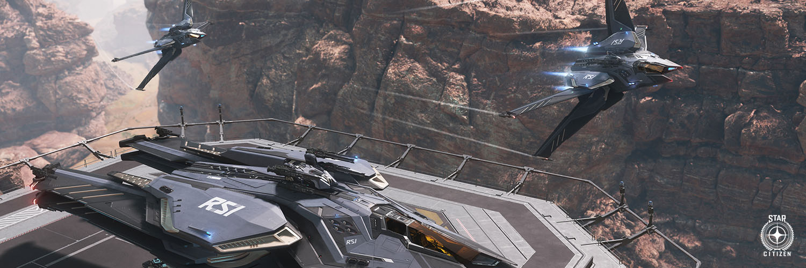

// Compartmentalized Structure
Intelligence & Analysis
Responsible for signal acquisition, data synthesis, and threat modeling. MIRROR processes what others collect — and sees the patterns they cannot. No direct action operation proceeds without a MIRROR intelligence product reviewed by the Directorate.
Direct Action & Response
Operational response and sanctioned direct action. EDGE executes what MIRROR confirms and the Directorate authorizes. Activated for the first time in the late 2870s. Target and outcome — unrecorded.
Cover Ops & Logistics
Maintains OSR's public identity as a legitimate PMC. Handles contract intake, external relations, and logistics across UEE-adjacent systems. The face that the verse sees. The one that answers questions — with questions.